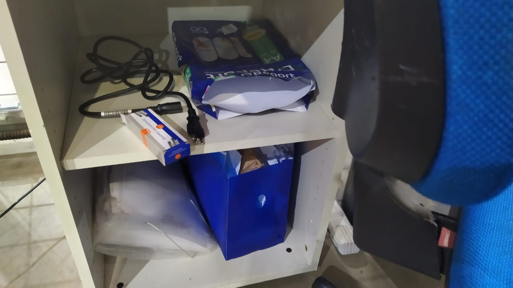

Relatório da Auditoria 5S do mês de Dezembro 2024 - 1° Turno
O que é 5S?
O que é o método 5S? A ferramenta 5S é um método que visa melhorar o
ambiente de trabalho e aumentar a produtividade e a qualidade total
das entregas da companhia, tendo como base cinco sensos: utilização,
organização, limpeza, bem-estar e autodisciplina.
Quais são os 5S?
O 5S é um conjunto, desenvolvido no Japão, de cinco práticas destinadas
a promover a organização, a limpeza e a eficiência no ambiente de trabalho.
São elas: Seiri (senso de utilização), Seiton (senso de ordenação),
Seiso (senso de limpeza), Seiketsu (senso de padronização) e Shitsuke
(senso de disciplina).
Áreas de apoio
Expedição
Demais áreas de apoio
mochila em cima da mesaDistribuição
Placa de Cambuí faltandoDescarga
Paleteira com jogo no pina da alavancaPaleteira sem pressão no pistão hidráulico
Paleteira nescessita de ajuda para descer
Checklist de limpeza desatualizado
Avisos colados na mesa estão rasgados
Chave de carro na mesa da operação
Mochila fora do local adequado
"5S, na escuta?.."

Transferência
Volumes mal acondicionado nos paletesMesca ocorrência anterior
Automatic
O lendario vergalhão...Grade protetora quebrada com arames expostos
Palete com ripa quebrada
Checklist desatualizado
Coleta
Esteira e paleteiras ocupando o local da coletaColunas extremamente sujas
Porta palete
Pregos expostosEscada e acrilico da caixa de energia fora do lugar
Caixa do sensor sem utilização
fresta aberta no duto de fição
Fezes de passaros no corrimão

Avisos no relogio de ponto pedindo arrego
Placas sem utilização e tortas
Pedestal plastico sem local de armazenamento
Perdas e Danos
Objetos sem uso sobre a mesaOs mesmo objetos caidos no chão
Fita strech sem uso sobre a mesa
Armario sem 5S

Resultado
Auditor 5S - 1° turno
- Danilo Monteiro da Silva
Lider 5S - 1° turno
- Gustavo Otto Souza Kind